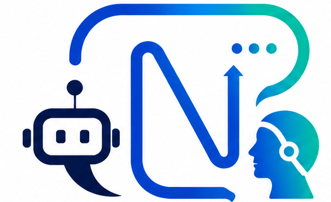

Assistente Virtual
NOVA FCT – Bolseiro
Conhecimento institucional ao serviço do Bolseiro.
Coloque a sua questão. O Assistente responde com base na documentação institucional e, sempre que adequado, indica fontes oficiais para consulta.
Bem-vindo ao Assistente Virtual do Bolseiro da NOVA FCT.
Estou disponível para prestar informação institucional sobre bolsas de investigação, procedimentos administrativos, direitos, deveres e regulamentos aplicáveis.
Como posso ajudar?
Estou disponível para prestar informação institucional sobre bolsas de investigação, procedimentos administrativos, direitos, deveres e regulamentos aplicáveis.
Como posso ajudar?
10:30
Como posso solicitar o SSV?
10:31 ✓✓
O Seguro Social Voluntário (SSV) é um regime contributivo que permite ao bolseiro assegurar proteção social durante a vigência da bolsa, nos termos legalmente aplicáveis.
Base documental: Manual Normativo · Guia do Bolseiro.
Informação oficial: consulte a página da Segurança Social sobre o Seguro Social Voluntário.
Base documental: Manual Normativo · Guia do Bolseiro.
Informação oficial: consulte a página da Segurança Social sobre o Seguro Social Voluntário.
Consultar mais sobre este tema🌐 Segurança Social — Seguro Social Voluntário
📖 Leitura complementar — Doutor Finanças
👤 Em caso de dúvida sobre a sua situação concreta, contacte a DRH.
📖 Leitura complementar — Doutor Finanças
👤 Em caso de dúvida sobre a sua situação concreta, contacte a DRH.
10:32
As respostas são baseadas na informação disponível e não substituem a consulta dos regulamentos oficiais. Em caso de dúvida, contacte sempre os serviços da Divisão de Recursos Humanos da NOVA FCT.